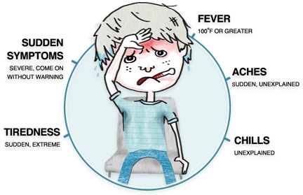
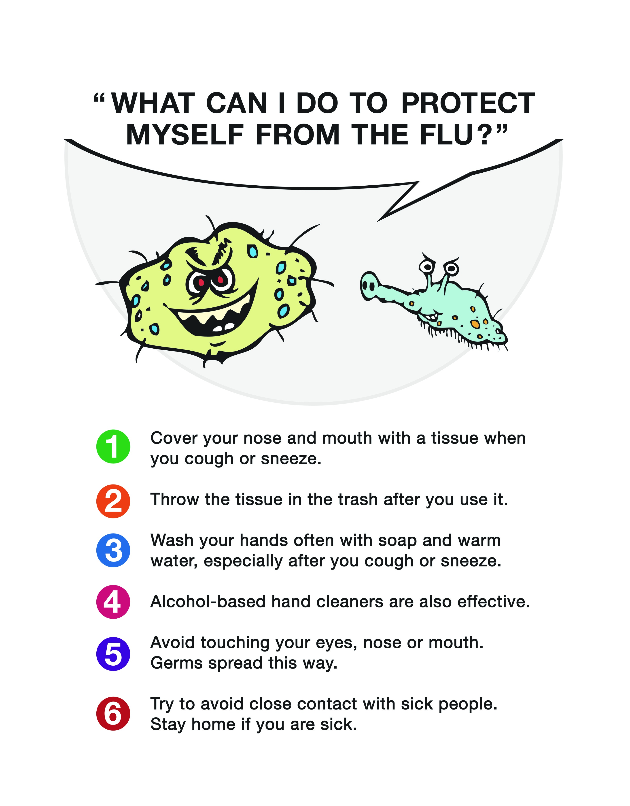

Jalisco Sin Influenza
Buscando informar a la población de Jalisco sobre la Influencia, su presencia en el momento y como prevenir sus graves consecuencias.

Interface
Our app is going to be an informative app, but to avoid making it a very boring app that no one wants it will have images and atractive colors, it will work with google maps API to find the hospitals.

Symptoms Recognition
Flu symptoms include:

Where to go?
If you feel bad inmediatly go to the nearest hospital to your location.

What to do?
Seek medical attention immediately if you experience any of the following:
